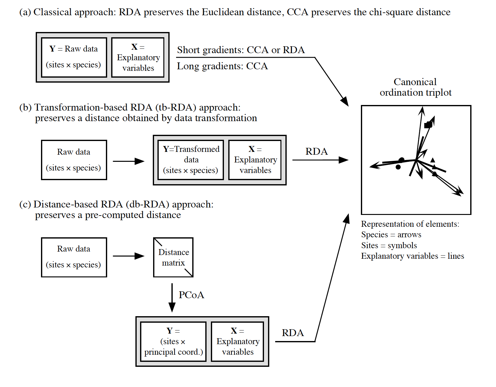

Nowadays: PCoA and db-RDA
Radchuk Viktoriia
2023-03-27
Reminder on ways to analyse compositional data

Transformation-based & distance-based approaches

@Modified from Legendre & Gallagher 2001
One can argue that there is no need to know about CA, CCA and length of the gradient since transformation-based and distance-based approaches are available.
Principal Coordinate Analysis (PCoA)
- PCoA provides Euclidean representation of the objects, the distances
among which are measured by any dissimilarity or distance.
- PCoA is unconstrained ordination method that is
applied to dissimilarity or distance matrix (instead of using raw site
by species matrix in PCA, RDA, CA etc).
- Like PCA and CA, PCoA produces a set of orthogonal axes, and their importance is measured by eigenvalues.
Negative eigenvalues
- In case of using distance measure that is not metric, the PCoA may
produce axes with negative eigenvalues which cannot be plotted.
- Ways to deal with this:
- Lingoes correction adds a constant to the squared distance among the objects;
- Cailliez correction adds a constant to distances
directly.
- convert non-metric dissimilarity index to a metric one
(e.g. Bray-Curtis dissimilarity is not metric, but after square-root
transformation becomes metric).
- Since PCoA is applied to the dissimilarity matrix (calculated for samples, i.e. objects), the species scores are not calculated. But they can be projected on the ordination space by weighted averaging or correlations, similarly as supplementary environmental variables are projected with envfit() function.
Dissimilarity metrics
- Jaccard
- Soerensen
- Bray-Curtis
- Chord
- Hellinger
- Gower (allows using variables of different data types
together)
- ….
Important: transformation-based approach works with the following transformations: chord, Hellinger, chi-square and Ochiai distances, whereas distance-based approach is appplicable to a much wider range of dissimilarity metrics.
Application of PCoA
We again use the plant community data taken in 24 sites.
## 'data.frame': 24 obs. of 44 variables:
## $ Callvulg: num 0.55 0.67 0.1 0 0 ...
## $ Empenigr: num 11.13 0.17 1.55 15.13 12.68 ...
## $ Rhodtome: num 0 0 0 2.42 0 0 1.55 0 0.35 0.07 ...
## $ Vaccmyrt: num 0 0.35 0 5.92 0 ...
## $ Vaccviti: num 17.8 12.1 13.5 16 23.7 ...
## $ Pinusylv: num 0.07 0.12 0.25 0 0.03 0.12 0.1 0.1 0.05 0.12 ...
## $ Descflex: num 0 0 0 3.7 0 0.02 0.78 0 0.4 0 ...
## $ Betupube: num 0 0 0 0 0 0 0.02 0 0 0 ...
## $ Vacculig: num 1.6 0 0 1.12 0 0 2 0 0.2 0 ...
## $ Diphcomp: num 2.07 0 0 0 0 0 0 0 0 0.07 ...
## $ Dicrsp : num 0 0.33 23.43 0 0 ...
## $ Dicrfusc: num 1.62 10.92 0 3.63 3.42 ...
## $ Dicrpoly: num 0 0.02 1.68 0 0.02 0.02 0 0.23 0.2 0 ...
## $ Hylosple: num 0 0 0 6.7 0 0 0 0 9.97 0 ...
## $ Pleuschr: num 4.67 37.75 32.92 58.07 19.42 ...
## $ Polypili: num 0.02 0.02 0 0 0.02 0.02 0 0 0 0 ...
## $ Polyjuni: num 0.13 0.23 0.23 0 2.12 1.58 0 0.02 0.08 0.02 ...
## $ Polycomm: num 0 0 0 0.13 0 0.18 0 0 0 0 ...
## $ Pohlnuta: num 0.13 0.03 0.32 0.02 0.17 0.07 0.1 0.13 0.07 0.03 ...
## $ Ptilcili: num 0.12 0.02 0.03 0.08 1.8 0.27 0.03 0.1 0.03 0.25 ...
## $ Barbhatc: num 0 0 0 0.08 0.02 0.02 0 0 0 0.07 ...
## $ Cladarbu: num 21.73 12.05 3.58 1.42 9.08 ...
## $ Cladrang: num 21.47 8.13 5.52 7.63 9.22 ...
## $ Cladstel: num 3.5 0.18 0.07 2.55 0.05 ...
## $ Cladunci: num 0.3 2.65 8.93 0.15 0.73 0.25 2.38 0.82 0.05 0.95 ...
## $ Cladcocc: num 0.18 0.13 0 0 0.08 0.1 0.17 0.15 0.02 0.17 ...
## $ Cladcorn: num 0.23 0.18 0.2 0.38 1.42 0.25 0.13 0.05 0.03 0.05 ...
## $ Cladgrac: num 0.25 0.23 0.48 0.12 0.5 0.18 0.18 0.22 0.07 0.23 ...
## $ Cladfimb: num 0.25 0.25 0 0.1 0.17 0.1 0.2 0.22 0.1 0.18 ...
## $ Cladcris: num 0.23 1.23 0.07 0.03 1.78 0.12 0.2 0.17 0.02 0.57 ...
## $ Cladchlo: num 0 0 0.1 0 0.05 0.05 0.02 0 0 0.02 ...
## $ Cladbotr: num 0 0 0.02 0.02 0.05 0.02 0 0 0.02 0.07 ...
## $ Cladamau: num 0.08 0 0 0 0 0 0 0 0 0 ...
## $ Cladsp : num 0.02 0 0 0.02 0 0 0.02 0.02 0 0.07 ...
## $ Cetreric: num 0.02 0.15 0.78 0 0 0 0.02 0.18 0 0.18 ...
## $ Cetrisla: num 0 0.03 0.12 0 0 0 0 0.08 0.02 0.02 ...
## $ Flavniva: num 0.12 0 0 0 0.02 0.02 0 0 0 0 ...
## $ Nepharct: num 0.02 0 0 0 0 0 0 0 0 0 ...
## $ Stersp : num 0.62 0.85 0.03 0 1.58 0.28 0 0.03 0.02 0.03 ...
## $ Peltapht: num 0.02 0 0 0.07 0.33 0 0 0 0 0.02 ...
## $ Icmaeric: num 0 0 0 0 0 0 0 0.07 0 0 ...
## $ Cladcerv: num 0 0 0 0 0 0 0 0 0 0 ...
## $ Claddefo: num 0.25 1 0.33 0.15 1.97 0.37 0.15 0.67 0.08 0.47 ...
## $ Cladphyl: num 0 0 0 0 0 0 0 0 0 0 ...Calculate Bray-Curtis dissimilarity
## 18 15 24 27 23 19 22
## 15 0.5310021
## 24 0.6680661 0.3597783
## 27 0.5621247 0.4055610 0.4934947
## 23 0.3747078 0.3652097 0.5020306 0.4286111
## 19 0.5094738 0.4560757 0.5092318 0.4878190 0.3606242
## 22 0.6234419 0.3579517 0.5010050 0.4655224 0.4812706 0.4726483
## 16 0.5337610 0.3976674 0.5907623 0.5683930 0.4094312 0.4496731 0.2678031
## 28 0.8418209 0.5225414 0.5736665 0.3027802 0.6979519 0.6431734 0.5985666
## 13 0.3453347 0.6063846 0.7576747 0.7543736 0.6221471 0.5739244 0.6948736
## 14 0.5449810 0.4803756 0.6533606 0.7467915 0.5645808 0.6331942 0.5357609
## 20 0.3879069 0.3784188 0.4346892 0.4957833 0.2877014 0.3953776 0.4627020
## 25 0.6318891 0.3376115 0.3369098 0.5001593 0.4258617 0.4311299 0.3822981
## 7 0.3603697 0.6717391 0.7931069 0.7792917 0.6390838 0.6958570 0.7459886
## 5 0.4955699 0.7178612 0.8561753 0.8732190 0.7295255 0.7898205 0.8611451
## 6 0.3382309 0.6355122 0.7441373 0.7496935 0.6252483 0.5684030 0.7249162
## 3 0.5277480 0.7578503 0.8382119 0.8090236 0.7128798 0.5302756 0.8026152
## 4 0.4694018 0.6843974 0.8309875 0.8413800 0.7117919 0.5177604 0.8015314
## 2 0.5724092 0.8206269 0.8372551 0.7581924 0.7249869 0.5389222 0.8321464
## 9 0.6583569 0.7761039 0.7590517 0.7415898 0.6693889 0.5393143 0.7725082
## 12 0.4688038 0.6794199 0.6894538 0.6253616 0.5384762 0.4288556 0.7051751
## 10 0.6248996 0.7644564 0.7842829 0.7096540 0.6625476 0.5059910 0.7875328
## 11 0.4458523 0.4716274 0.5677373 0.6322919 0.4710280 0.3293493 0.5812219
## 21 0.5560864 0.7607281 0.7272727 0.5456001 0.4951221 0.5315894 0.6771167
## 16 28 13 14 20 25 7
## 15
## 24
## 27
## 23
## 19
## 22
## 16
## 28 0.7015360
## 13 0.5514941 0.8600122
## 14 0.4826350 0.8239667 0.5547565
## 20 0.3737797 0.6963560 0.5785542 0.5115258
## 25 0.4306058 0.6086150 0.7412605 0.5541517 0.4518556
## 7 0.6596144 0.8960202 0.4533054 0.6550830 0.5959162 0.7556726
## 5 0.7184789 0.9539592 0.5148988 0.7257681 0.7153827 0.8600858 0.3237446
## 6 0.6509879 0.9014440 0.3515673 0.6227473 0.5439118 0.7343872 0.1754713
## 3 0.6837953 0.9234485 0.4965478 0.7836661 0.6690479 0.8168684 0.5154487
## 4 0.6462648 0.9381169 0.3881748 0.6734743 0.6771854 0.8400134 0.5601721
## 2 0.7354202 0.9053213 0.5968691 0.8592489 0.6951539 0.8179089 0.6465777
## 9 0.8185866 0.8686670 0.7292530 0.8282497 0.6982486 0.7884243 0.8318435
## 12 0.6342166 0.8543167 0.5902386 0.7507074 0.5182426 0.7062564 0.6991666
## 10 0.7656598 0.9016604 0.7160439 0.8304088 0.6706349 0.7845955 0.7697453
## 11 0.5172825 0.7544064 0.4272808 0.6743277 0.4461712 0.6175930 0.5262233
## 21 0.7474559 0.7248773 0.7212772 0.8096450 0.6320431 0.7466232 0.7933350
## 5 6 3 4 2 9 12
## 15
## 24
## 27
## 23
## 19
## 22
## 16
## 28
## 13
## 14
## 20
## 25
## 7
## 5
## 6 0.3984538
## 3 0.5634432 0.4517627
## 4 0.5377506 0.4665100 0.3592689
## 2 0.7257597 0.5552754 0.2099203 0.4841145
## 9 0.9014583 0.7223126 0.3885811 0.6222340 0.2330286
## 12 0.7808641 0.5762462 0.2641851 0.4870742 0.1846147 0.2277228
## 10 0.8504191 0.6567926 0.3413378 0.5776062 0.1456729 0.1117280 0.1793368
## 11 0.5563798 0.4077948 0.3002597 0.3215966 0.4209596 0.5145260 0.3688102
## 21 0.8888316 0.6720141 0.7507773 0.7641304 0.6779661 0.5952563 0.5602137
## 10 11
## 15
## 24
## 27
## 23
## 19
## 22
## 16
## 28
## 13
## 14
## 20
## 25
## 7
## 5
## 6
## 3
## 4
## 2
## 9
## 12
## 10
## 11 0.5043578
## 21 0.6147874 0.6713363## [1] "dist"How this matrix look like

Apply PCoA
## $points
## [,1] [,2]
## 18 0.09459373 0.159145755
## 15 -0.31248809 0.100327514
## 24 -0.35106507 -0.059540964
## 27 -0.32914546 -0.170193480
## 23 -0.19259443 -0.014592496
## 19 -0.06794575 -0.145016902
## 22 -0.35120808 0.003005407
## 16 -0.20888645 0.131618683
## 28 -0.42972605 -0.149929973
## 13 0.17363376 0.248951217
## 14 -0.16221978 0.255850976
## 20 -0.16609834 0.047985769
## 25 -0.37239156 -0.010924475
## 7 0.18855566 0.360007904
## 5 0.23883008 0.431855074
## 6 0.22646593 0.250581859
## 3 0.41035152 -0.052963237
## 4 0.33599874 0.115684738
## 2 0.39230741 -0.232181221
## 9 0.25648610 -0.409724003
## 12 0.23075195 -0.260846892
## 10 0.28971787 -0.357492939
## 11 0.13455894 0.007128550
## 21 -0.02848261 -0.248736864
##
## $eig
## [1] 1.755217e+00 1.133446e+00 4.429018e-01 3.698054e-01 2.453532e-01
## [6] 1.960921e-01 1.751131e-01 1.284467e-01 9.715944e-02 7.596007e-02
## [11] 6.371779e-02 5.832251e-02 3.949338e-02 1.726992e-02 5.101108e-03
## [16] -1.110223e-16 -4.131222e-04 -6.465355e-03 -1.331475e-02 -2.539435e-02
## [21] -3.751049e-02 -4.800689e-02 -5.371458e-02 -7.413903e-02
##
## $x
## NULL
##
## $ac
## [1] 0
##
## $GOF
## [1] 0.5706160 0.6013788Option eig = TRUE also returns eigenvalues.
Visualize the results
Usually only site scores are returned (as we are working with dissimilarities between the sites)

Visualize PCoA, add species
We can project species on ordination by showing weighted averages of their contributions to the sites.
spe.plants <- wascores(x = bc_plant$points, w = varespec)
ordiplot(bc_plant, display = 'sites', type = 'text')
text(spe.plants, labels = rownames(spe.plants), col = 'blue', cex = 0.7)
Once more: now focus on canonical methods

@Modified from Legendre & Gallagher 2001
Distance-based RDA
- A constrained ordination method that works on the
matrices of dissimilarity among the objects (samples, sites).
- PCoA is computed on a dissimilarity matrix –> all principal
coordinate axes are retained.
- Next, RDA is run by using the produced principal coordinates data as response matrix and the set of given explanatory variables.
Application of db-RDA
data("varechem")
plant.dbRDA <- capscale(varespec ~ N + P + K + Al + S, varechem, dist="bray")
plant.dbRDA## Call: capscale(formula = varespec ~ N + P + K + Al + S, data =
## varechem, distance = "bray")
##
## Inertia Proportion Rank
## Total 4.54444 1.00000
## Constrained 2.09921 0.46193 5
## Unconstrained 2.70419 0.59505 15
## Imaginary -0.25896 -0.05698 8
## Inertia is squared Bray distance
## Species scores projected from 'varespec'
##
## Eigenvalues for constrained axes:
## CAP1 CAP2 CAP3 CAP4 CAP5
## 1.3005 0.4602 0.1589 0.1347 0.0450
##
## Eigenvalues for unconstrained axes:
## MDS1 MDS2 MDS3 MDS4 MDS5 MDS6 MDS7 MDS8 MDS9 MDS10 MDS11
## 0.9065 0.5021 0.3207 0.2386 0.1968 0.1402 0.1030 0.0706 0.0674 0.0557 0.0497
## MDS12 MDS13 MDS14 MDS15
## 0.0274 0.0177 0.0072 0.0006Results
##
## Call:
## capscale(formula = varespec ~ N + P + K + Al + S, data = varechem, distance = "bray")
##
## Partitioning of squared Bray distance:
## Inertia Proportion
## Total 4.803 1.000
## Constrained 2.099 0.437
## Unconstrained 2.704 0.563
##
## Eigenvalues, and their contribution to the squared Bray distance
##
## Importance of components:
## CAP1 CAP2 CAP3 CAP4 CAP5 MDS1 MDS2
## Eigenvalue 1.3005 0.4602 0.15890 0.13466 0.044969 0.9065 0.5021
## Proportion Explained 0.2707 0.0958 0.03308 0.02803 0.009362 0.1887 0.1045
## Cumulative Proportion 0.2707 0.3666 0.39963 0.42766 0.437027 0.6257 0.7303
## MDS3 MDS4 MDS5 MDS6 MDS7 MDS8 MDS9
## Eigenvalue 0.32072 0.23855 0.19683 0.14017 0.10301 0.07057 0.06741
## Proportion Explained 0.06677 0.04966 0.04098 0.02918 0.02144 0.01469 0.01403
## Cumulative Proportion 0.79705 0.84672 0.88769 0.91687 0.93832 0.95301 0.96704
## MDS10 MDS11 MDS12 MDS13 MDS14 MDS15
## Eigenvalue 0.05568 0.04973 0.027363 0.017696 0.007214 0.0006125
## Proportion Explained 0.01159 0.01035 0.005697 0.003684 0.001502 0.0001275
## Cumulative Proportion 0.97864 0.98899 0.994687 0.998371 0.999872 1.0000000
##
## Accumulated constrained eigenvalues
## Importance of components:
## CAP1 CAP2 CAP3 CAP4 CAP5
## Eigenvalue 1.3005 0.4602 0.15890 0.13466 0.04497
## Proportion Explained 0.6195 0.2192 0.07569 0.06415 0.02142
## Cumulative Proportion 0.6195 0.8387 0.91443 0.97858 1.00000
##
## Scaling 2 for species and site scores
## * Species are scaled proportional to eigenvalues
## * Sites are unscaled: weighted dispersion equal on all dimensions
## * General scaling constant of scores: 3.197437
##
##
## Species scores
##
## CAP1 CAP2 CAP3 CAP4 CAP5 MDS1
## Callvulg 3.849e-02 8.815e-02 -0.0436223 3.995e-01 1.251e-01 3.402e-02
## Empenigr -1.080e-01 -1.267e-02 -0.0825617 -2.858e-02 -1.127e-01 -1.708e-01
## Rhodtome -2.042e-02 1.112e-02 -0.0066672 6.837e-03 -2.341e-02 -2.481e-02
## Vaccmyrt -1.684e-01 8.528e-02 0.0837035 1.309e-02 -5.603e-02 -1.237e-01
## Vaccviti -1.728e-01 -1.410e-01 -0.1360938 -7.760e-02 -1.078e-01 -1.505e-01
## Pinusylv 1.588e-03 -4.966e-03 -0.0023270 4.700e-03 -9.149e-03 -4.204e-03
## Descflex -2.272e-02 3.019e-03 0.0100454 7.736e-03 -1.045e-02 -8.806e-03
## Betupube -2.500e-04 4.571e-04 -0.0007665 -1.066e-04 -1.252e-03 -1.217e-03
## Vacculig 4.133e-02 3.868e-02 0.0057155 -2.560e-02 1.492e-02 1.529e-02
## Diphcomp 1.307e-03 2.654e-04 -0.0032470 -6.220e-03 -1.708e-03 -3.112e-04
## Dicrsp -1.004e-01 -9.578e-02 -0.0064995 -1.145e-01 1.499e-01 1.165e-01
## Dicrfusc -1.986e-01 1.601e-01 -0.1675246 1.184e-01 -1.060e-01 1.713e-01
## Dicrpoly -5.907e-03 -4.224e-03 -0.0092008 -5.773e-03 -2.412e-03 -1.051e-02
## Hylosple -9.611e-02 1.994e-02 0.0966030 2.403e-03 6.886e-03 -3.028e-02
## Pleuschr -1.057e+00 8.080e-03 0.4934732 1.584e-01 -4.248e-02 1.592e-01
## Polypili 3.804e-04 4.999e-04 0.0012050 -6.588e-04 -1.414e-03 8.141e-04
## Polyjuni -2.907e-02 3.028e-03 0.0066185 -2.998e-02 -1.079e-02 1.500e-02
## Polycomm -1.367e-03 4.451e-04 -0.0007909 -3.789e-06 -1.455e-03 -1.404e-03
## Pohlnuta -1.294e-03 -3.379e-03 -0.0012307 -3.152e-04 -1.004e-04 -1.868e-03
## Ptilcili -1.095e-02 1.446e-02 -0.0275353 -2.214e-03 -4.887e-02 -5.024e-02
## Barbhatc -1.949e-03 4.922e-03 -0.0090394 3.146e-04 -1.430e-02 -1.535e-02
## Cladarbu 3.592e-01 2.156e-01 -0.1314592 2.210e-02 -4.888e-02 3.899e-01
## Cladrang 6.915e-01 3.987e-01 0.0999930 -2.719e-01 -9.374e-02 1.338e-01
## Cladstel 1.030e+00 -8.670e-01 0.0479169 3.933e-02 -5.042e-02 -1.303e+00
## Cladunci -3.744e-02 -4.329e-02 -0.0900099 -1.655e-02 6.860e-02 1.657e-01
## Cladcocc 1.185e-03 -2.471e-04 -0.0011728 5.838e-04 -1.394e-03 1.406e-03
## Cladcorn -5.903e-03 -1.650e-03 -0.0004248 -6.392e-03 -2.141e-04 2.289e-03
## Cladgrac -3.764e-04 -1.549e-04 -0.0026781 -2.328e-03 1.884e-03 2.249e-03
## Cladfimb 1.022e-05 5.299e-05 -0.0035926 1.471e-04 -1.997e-03 -5.815e-04
## Cladcris -5.479e-03 -2.427e-03 -0.0085532 8.029e-03 -3.348e-03 7.937e-03
## Cladchlo 6.455e-04 -1.966e-03 -0.0016328 -9.621e-04 5.118e-04 -2.919e-03
## Cladbotr -5.439e-04 5.660e-04 -0.0007182 8.258e-04 -3.976e-04 -1.305e-03
## Cladamau 4.235e-05 1.974e-04 -0.0001025 -4.851e-04 -8.083e-05 -2.108e-05
## Cladsp 7.725e-04 -1.183e-03 -0.0008371 2.621e-04 1.087e-03 -6.026e-04
## Cetreric 9.425e-04 -4.970e-03 -0.0039402 -1.757e-03 6.751e-03 6.983e-03
## Cetrisla 4.796e-04 -2.419e-03 -0.0020205 6.949e-04 -4.814e-03 -4.916e-03
## Flavniva 5.695e-02 -3.797e-02 0.0553176 2.291e-02 1.162e-02 2.934e-02
## Nepharct -1.279e-02 3.075e-03 0.0091618 -1.708e-02 -1.093e-02 1.130e-02
## Stersp 9.461e-03 4.907e-02 -0.0049240 -7.207e-02 8.879e-04 1.802e-02
## Peltapht -1.268e-03 -2.913e-04 0.0018767 3.324e-04 -1.471e-03 4.614e-04
## Icmaeric 1.655e-04 7.978e-04 -0.0002832 -7.010e-04 -5.537e-05 3.630e-04
## Cladcerv 3.259e-04 -1.986e-04 0.0003779 9.815e-05 4.536e-05 8.469e-05
## Claddefo -1.202e-02 -1.327e-03 -0.0117958 3.562e-04 6.605e-03 1.095e-02
## Cladphyl 8.794e-04 -2.705e-03 0.0007507 4.064e-04 -1.195e-03 -1.311e-03
##
##
## Site scores (weighted sums of species scores)
##
## CAP1 CAP2 CAP3 CAP4 CAP5 MDS1
## 18 0.2711 0.57206 -1.24058 -0.04136 -1.07755 0.135390
## 15 -0.7787 0.32563 0.36666 0.38704 1.08643 1.115600
## 24 -0.9536 -0.46569 0.21996 -0.87519 3.38702 0.790815
## 27 -1.0600 -0.08148 1.21120 -0.13336 -2.12242 -0.359864
## 23 -0.5932 0.01619 -1.16044 -0.52746 -1.49797 -0.022706
## 19 -0.2274 -0.62214 0.34028 0.71267 -1.02601 -0.399975
## 22 -0.9049 0.41254 -0.66882 0.72361 -0.46036 0.007669
## 16 -0.4661 0.82118 -0.50581 1.10894 0.26619 0.415689
## 28 -1.2685 0.26692 2.97062 0.12414 0.44647 -0.485172
## 13 0.6085 0.93930 -0.43060 2.02213 1.45533 -0.080571
## 14 -0.2768 0.74389 -2.18356 0.76746 3.24174 0.997595
## 20 -0.4406 0.07900 -0.88547 -0.35815 1.26840 0.321164
## 25 -0.9745 0.01458 -0.47031 -0.63450 1.75349 0.516721
## 7 0.6925 1.59563 -0.15780 -1.42395 0.35572 0.570011
## 5 0.8503 1.78925 0.58848 -1.50772 0.81093 0.154269
## 6 0.7505 0.92678 -0.53947 -0.58153 -0.01701 0.567491
## 3 1.1262 -0.43090 0.89138 -0.26544 -0.23223 -0.673247
## 4 1.0099 0.02471 0.57413 1.50178 -0.02087 0.723253
## 2 0.9552 -1.06899 0.87407 -0.30725 -0.85573 -0.915441
## 9 0.4953 -2.00660 0.10491 -0.31153 -0.52608 -0.814851
## 12 0.4790 -1.35793 -0.08221 0.06656 -0.93577 -0.864874
## 10 0.6008 -1.76862 0.17178 -0.57097 -1.76297 -0.959848
## 11 0.4162 -0.23644 0.92007 0.33707 0.21574 0.396487
## 21 -0.3111 -0.48886 -0.90844 -0.21299 -3.75250 -1.135604
##
##
## Site constraints (linear combinations of constraining variables)
##
## CAP1 CAP2 CAP3 CAP4 CAP5 MDS1
## 18 -0.37653 -0.139764 -0.37067 -0.234992 -0.3620 0.135390
## 15 -0.15992 -0.498880 -0.61451 0.552882 -0.9662 1.115600
## 24 -0.46168 -1.085428 -0.26932 -0.467892 1.3758 0.790815
## 27 -0.98702 -0.062735 0.54709 0.305276 -0.4283 -0.359864
## 23 -0.75221 -0.030419 0.06091 -0.345648 0.2815 -0.022706
## 19 -0.22069 0.047940 -0.62571 0.208766 0.3668 -0.399975
## 22 -0.59632 0.702517 -0.47525 0.254901 0.1173 0.007669
## 16 -0.10997 0.624251 -0.31900 0.193256 -0.4729 0.415689
## 28 -1.23258 0.554933 1.58105 -0.115393 0.2671 -0.485172
## 13 0.29588 0.834790 -0.37084 2.394887 1.0933 -0.080571
## 14 -0.14833 -0.004643 -0.66663 0.001625 0.1289 0.997595
## 20 -0.45072 -0.163447 0.29982 -0.375588 1.0500 0.321164
## 25 -0.61697 0.097393 0.36653 -0.509503 -0.4178 0.516721
## 7 1.20455 0.884416 0.08719 -0.368869 0.2824 0.570011
## 5 0.08149 1.256972 -0.25126 -1.126778 0.1239 0.154269
## 6 0.65733 -0.063247 -0.44972 -0.515819 -0.7988 0.567491
## 3 1.20935 0.731046 0.53787 -0.788086 0.3709 -0.673247
## 4 1.07743 -0.880749 1.18395 0.446317 0.1639 0.723253
## 2 0.82235 -0.221959 0.36961 0.110043 0.2695 -0.915441
## 9 0.50150 -1.295816 -0.77056 -0.503841 0.5571 -0.814851
## 12 0.12646 -0.312926 -0.75012 0.172019 -0.7341 -0.864874
## 10 -0.17580 -1.047895 0.25571 0.209396 -0.1971 -0.959848
## 11 0.41849 -0.311147 1.26487 0.549667 -1.2203 0.396487
## 21 -0.10610 0.384801 -0.62102 -0.046625 -0.8507 -1.135604
##
##
## Biplot scores for constraining variables
##
## CAP1 CAP2 CAP3 CAP4 CAP5 MDS1
## N 0.01046 0.8504 0.1848 -0.1889 0.4549 0
## P -0.42479 -0.5646 0.6254 0.1199 0.3087 0
## K -0.41042 -0.2612 0.4031 0.7117 0.3072 0
## Al 0.84607 -0.1972 0.2763 0.3098 0.2701 0
## S -0.15216 -0.5548 0.2051 0.5205 0.5968 0Visualize db-RDA

Test significance
## Permutation test for capscale under reduced model
## Permutation: free
## Number of permutations: 999
##
## Model: capscale(formula = varespec ~ N + P + K + Al + S, data = varechem, distance = "bray")
## Df SumOfSqs F Pr(>F)
## Model 5 2.0992 2.7946 0.001 ***
## Residual 18 2.7042
## ---
## Signif. codes: 0 '***' 0.001 '**' 0.01 '*' 0.05 '.' 0.1 ' ' 1## Permutation test for capscale under reduced model
## Terms added sequentially (first to last)
## Permutation: free
## Number of permutations: 999
##
## Model: capscale(formula = varespec ~ N + P + K + Al + S, data = varechem, distance = "bray")
## Df SumOfSqs F Pr(>F)
## N 1 0.35243 2.3459 0.040 *
## P 1 0.39378 2.6211 0.023 *
## K 1 0.16771 1.1163 0.337
## Al 1 1.06044 7.0587 0.001 ***
## S 1 0.12485 0.8311 0.542
## Residual 18 2.70419
## ---
## Signif. codes: 0 '***' 0.001 '**' 0.01 '*' 0.05 '.' 0.1 ' ' 1Apply Lingoes correction
plant.dbRDA_add <- capscale(varespec ~ N + P + K + Al + S, varechem, dist="bray", add = TRUE)
plant.dbRDA_add## Call: capscale(formula = varespec ~ N + P + K + Al + S, data =
## varechem, distance = "bray", add = TRUE)
##
## Inertia Proportion Rank
## Total 6.2496 1.0000
## Constrained 2.4322 0.3892 5
## Unconstrained 3.8174 0.6108 18
## Inertia is Lingoes adjusted squared Bray distance
## Species scores projected from 'varespec'
##
## Eigenvalues for constrained axes:
## CAP1 CAP2 CAP3 CAP4 CAP5
## 1.3702 0.5318 0.2184 0.2046 0.1073
##
## Eigenvalues for unconstrained axes:
## MDS1 MDS2 MDS3 MDS4 MDS5 MDS6 MDS7 MDS8
## 0.9795 0.5705 0.3904 0.3079 0.2688 0.2129 0.1723 0.1399
## (Showing 8 of 18 unconstrained eigenvalues)
##
## Constant added to distances: 0.07413903Option add = TRUE adds a constant to the
dissimilarities.
Results with Lingoes correction
##
## Call:
## capscale(formula = varespec ~ N + P + K + Al + S, data = varechem, distance = "bray", add = TRUE)
##
## Partitioning of Lingoes adjusted squared Bray distance:
## Inertia Proportion
## Total 6.250 1.0000
## Constrained 2.432 0.3892
## Unconstrained 3.817 0.6108
##
## Eigenvalues, and their contribution to the Lingoes adjusted squared Bray distance
##
## Importance of components:
## CAP1 CAP2 CAP3 CAP4 CAP5 MDS1 MDS2
## Eigenvalue 1.3702 0.53178 0.21843 0.20460 0.10726 0.9795 0.57052
## Proportion Explained 0.2192 0.08509 0.03495 0.03274 0.01716 0.1567 0.09129
## Cumulative Proportion 0.2192 0.30433 0.33928 0.37202 0.38918 0.5459 0.63720
## MDS3 MDS4 MDS5 MDS6 MDS7 MDS8 MDS9
## Eigenvalue 0.39039 0.30789 0.26877 0.21289 0.17234 0.13987 0.13607
## Proportion Explained 0.06247 0.04927 0.04301 0.03406 0.02758 0.02238 0.02177
## Cumulative Proportion 0.69967 0.74893 0.79194 0.82600 0.85358 0.87596 0.89773
## MDS10 MDS11 MDS12 MDS13 MDS14 MDS15 MDS16
## Eigenvalue 0.12703 0.1218 0.09854 0.07961 0.06296 0.056087 0.042110
## Proportion Explained 0.02033 0.0195 0.01577 0.01274 0.01007 0.008975 0.006738
## Cumulative Proportion 0.91806 0.9376 0.95332 0.96606 0.97613 0.985107 0.991845
## MDS17 MDS18
## Eigenvalue 0.037460 0.013509
## Proportion Explained 0.005994 0.002161
## Cumulative Proportion 0.997839 1.000000
##
## Accumulated constrained eigenvalues
## Importance of components:
## CAP1 CAP2 CAP3 CAP4 CAP5
## Eigenvalue 1.3702 0.5318 0.21843 0.20460 0.1073
## Proportion Explained 0.5633 0.2186 0.08981 0.08412 0.0441
## Cumulative Proportion 0.5633 0.7820 0.87178 0.95590 1.0000
##
## Scaling 2 for species and site scores
## * Species are scaled proportional to eigenvalues
## * Sites are unscaled: weighted dispersion equal on all dimensions
## * General scaling constant of scores: 3.462547
##
##
## Species scores
##
## CAP1 CAP2 CAP3 CAP4 CAP5 MDS1
## Callvulg 3.637e-02 8.576e-02 -0.0008832 4.668e-01 -1.680e-01 3.252e-02
## Empenigr -1.025e-01 -1.258e-02 -0.0888003 -1.762e-02 1.647e-01 -1.643e-01
## Rhodtome -1.937e-02 1.101e-02 -0.0057654 8.667e-03 3.402e-02 -2.400e-02
## Vaccmyrt -1.596e-01 8.479e-02 0.0919779 -4.234e-03 7.681e-02 -1.193e-01
## Vaccviti -1.639e-01 -1.400e-01 -0.1514759 -6.274e-02 1.593e-01 -1.450e-01
## Pinusylv 1.507e-03 -4.944e-03 -0.0017026 5.521e-03 1.335e-02 -3.996e-03
## Descflex -2.152e-02 2.992e-03 0.0118868 6.288e-03 1.472e-02 -8.595e-03
## Betupube -2.380e-04 4.536e-04 -0.0008031 1.727e-05 1.827e-03 -1.175e-03
## Vacculig 3.916e-02 3.850e-02 0.0025102 -2.938e-02 -2.238e-02 1.472e-02
## Diphcomp 1.235e-03 2.822e-04 -0.0041793 -6.379e-03 2.443e-03 -2.902e-04
## Dicrsp -9.515e-02 -9.483e-02 -0.0236641 -1.251e-01 -2.173e-01 1.118e-01
## Dicrfusc -1.885e-01 1.581e-01 -0.1618395 1.698e-01 1.620e-01 1.640e-01
## Dicrpoly -5.609e-03 -4.191e-03 -0.0104296 -4.637e-03 3.743e-03 -1.018e-02
## Hylosple -9.099e-02 1.996e-02 0.1031174 -1.811e-02 -1.414e-02 -2.927e-02
## Pleuschr -1.002e+00 8.192e-03 0.5471862 6.955e-02 4.312e-02 1.514e-01
## Polypili 3.622e-04 5.029e-04 0.0012319 -1.046e-03 1.957e-03 7.883e-04
## Polyjuni -2.755e-02 3.136e-03 0.0036747 -3.570e-02 1.447e-02 1.440e-02
## Polycomm -1.297e-03 4.410e-04 -0.0008107 1.328e-04 2.122e-03 -1.358e-03
## Pohlnuta -1.227e-03 -3.357e-03 -0.0013372 -1.285e-04 1.997e-04 -1.793e-03
## Ptilcili -1.041e-02 1.435e-02 -0.0285647 2.316e-03 7.125e-02 -4.850e-02
## Barbhatc -1.859e-03 4.878e-03 -0.0092910 1.992e-03 2.091e-02 -1.482e-02
## Cladarbu 3.402e-01 2.138e-01 -0.1372869 5.511e-02 7.587e-02 3.753e-01
## Cladrang 6.554e-01 3.974e-01 0.0735663 -3.279e-01 1.223e-01 1.301e-01
## Cladstel 9.772e-01 -8.603e-01 0.0573850 2.300e-02 7.281e-02 -1.251e+00
## Cladunci -3.560e-02 -4.318e-02 -0.0991816 2.474e-03 -9.467e-02 1.593e-01
## Cladcocc 1.122e-03 -2.484e-04 -0.0011495 8.771e-04 2.066e-03 1.354e-03
## Cladcorn -5.596e-03 -1.616e-03 -0.0012116 -7.176e-03 1.780e-04 2.211e-03
## Cladgrac -3.607e-04 -1.528e-04 -0.0031741 -1.997e-03 -2.639e-03 2.157e-03
## Cladfimb 5.365e-06 4.598e-05 -0.0037656 9.000e-04 3.028e-03 -5.612e-04
## Cladcris -5.203e-03 -2.458e-03 -0.0080489 1.085e-02 5.385e-03 7.648e-03
## Cladchlo 6.105e-04 -1.952e-03 -0.0018631 -7.390e-04 -6.802e-04 -2.812e-03
## Cladbotr -5.167e-04 5.573e-04 -0.0006566 1.088e-03 6.212e-04 -1.260e-03
## Cladamau 3.993e-05 1.977e-04 -0.0001669 -5.271e-04 1.083e-04 -1.905e-05
## Cladsp 7.316e-04 -1.178e-03 -0.0008813 4.984e-04 -1.513e-03 -5.891e-04
## Cetreric 8.893e-04 -4.942e-03 -0.0045439 -9.892e-04 -9.540e-03 6.703e-03
## Cetrisla 4.541e-04 -2.404e-03 -0.0019595 1.067e-03 7.018e-03 -4.734e-03
## Flavniva 5.407e-02 -3.765e-02 0.0614493 1.371e-02 -1.851e-02 2.823e-02
## Nepharct -1.212e-02 3.144e-03 0.0079280 -2.165e-02 1.486e-02 1.081e-02
## Stersp 8.938e-03 4.898e-02 -0.0141398 -7.998e-02 -2.911e-03 1.761e-02
## Peltapht -1.199e-03 -2.853e-04 0.0020730 -8.124e-05 2.035e-03 4.448e-04
## Icmaeric 1.562e-04 7.942e-04 -0.0003876 -7.244e-04 7.321e-05 3.486e-04
## Cladcerv 3.095e-04 -1.966e-04 0.0004134 2.727e-05 -7.919e-05 8.174e-05
## Claddefo -1.141e-02 -1.355e-03 -0.0126398 3.165e-03 -8.933e-03 1.052e-02
## Cladphyl 8.361e-04 -2.684e-03 0.0008793 2.309e-04 1.696e-03 -1.261e-03
##
##
## Site scores (weighted sums of species scores)
##
## CAP1 CAP2 CAP3 CAP4 CAP5 MDS1
## 18 0.2669 0.52228 -1.11450 0.11746 0.6176 0.14975
## 15 -0.8232 0.20811 0.26069 0.43812 0.1290 1.20875
## 24 -1.0087 -0.59933 -0.05278 -0.75705 -2.5006 0.85603
## 27 -1.1593 -0.07698 1.12999 -0.19373 1.3294 -0.39906
## 23 -0.6480 0.01357 -1.04829 -0.29059 0.8320 -0.02208
## 19 -0.2456 -0.58691 0.29127 0.49412 0.1320 -0.42973
## 22 -0.9591 0.47546 -0.66043 0.73172 0.4017 0.01210
## 16 -0.4880 0.88789 -0.29401 0.96985 0.0590 0.43969
## 28 -1.3611 0.34191 2.87554 -0.36304 -0.5908 -0.52350
## 13 0.6438 0.99526 -0.17272 2.42664 -1.3031 -0.08839
## 14 -0.2957 0.68429 -1.89777 0.86289 -1.5072 1.08107
## 20 -0.4833 0.04463 -0.70430 -0.29633 -1.2526 0.34680
## 25 -1.0376 0.03235 -0.40569 -0.60692 -0.5121 0.55725
## 7 0.7787 1.62627 -0.17138 -1.18564 -0.5365 0.61880
## 5 0.8809 1.86591 0.19675 -1.57670 -0.5669 0.17337
## 6 0.8153 0.88693 -0.70849 -0.41218 0.7086 0.61339
## 3 1.2175 -0.29724 0.68805 -0.54469 -0.0340 -0.73358
## 4 1.0997 -0.10191 0.93550 1.14252 0.1250 0.78444
## 2 1.0204 -1.05947 0.77116 -0.30090 0.2676 -0.98875
## 9 0.5359 -2.04211 -0.14522 -0.41651 -0.2532 -0.89116
## 12 0.5096 -1.33154 -0.19314 0.04401 0.9122 -0.92668
## 10 0.6207 -1.81111 0.13481 -0.40705 0.8541 -1.03334
## 11 0.4566 -0.26519 1.19500 0.21248 0.4248 0.43063
## 21 -0.3364 -0.41306 -0.91000 -0.08847 2.2641 -1.23580
##
##
## Site constraints (linear combinations of constraining variables)
##
## CAP1 CAP2 CAP3 CAP4 CAP5 MDS1
## 18 -0.40814 -0.150523 -0.424418 -0.20253 0.3979 0.14975
## 15 -0.17359 -0.544276 -0.544162 0.66290 1.0752 1.20875
## 24 -0.50025 -1.175345 -0.395066 -0.43259 -1.4894 0.85603
## 27 -1.06790 -0.068158 0.646936 0.22895 0.4544 -0.39906
## 23 -0.81455 -0.031255 0.004129 -0.37340 -0.3132 -0.02208
## 19 -0.24003 0.048102 -0.645760 0.33218 -0.3749 -0.42973
## 22 -0.64681 0.757268 -0.471681 0.35608 -0.1090 0.01210
## 16 -0.11971 0.674453 -0.299831 0.25052 0.5241 0.43969
## 28 -1.33276 0.605319 1.668558 -0.36486 -0.3371 -0.52350
## 13 0.31920 0.885791 -0.044769 2.65588 -1.1255 -0.08839
## 14 -0.16165 -0.007224 -0.716597 0.11076 -0.1204 1.08107
## 20 -0.48786 -0.175415 0.235536 -0.42571 -1.1523 0.34680
## 25 -0.66751 0.110193 0.322493 -0.61345 0.4315 0.55725
## 7 1.30407 0.960509 0.023891 -0.39566 -0.3170 0.61880
## 5 0.08727 1.367649 -0.454480 -1.15501 -0.1513 0.17337
## 6 0.71141 -0.064956 -0.544472 -0.50051 0.8670 0.61339
## 3 1.30998 0.798342 0.437650 -0.91516 -0.4339 -0.73358
## 4 1.16887 -0.953001 1.334939 0.28787 -0.2013 0.78444
## 2 0.89110 -0.240035 0.405732 0.06425 -0.2999 -0.98875
## 9 0.54236 -1.402757 -0.917821 -0.41246 -0.5896 -0.89116
## 12 0.13618 -0.341026 -0.756791 0.28356 0.8199 -0.92668
## 10 -0.18946 -1.135171 0.314495 0.17154 0.2116 -1.03334
## 11 0.45553 -0.334890 1.472971 0.35601 1.2960 0.43063
## 21 -0.11575 0.416404 -0.651483 0.03085 0.9371 -1.23580
##
##
## Biplot scores for constraining variables
##
## CAP1 CAP2 CAP3 CAP4 CAP5 MDS1
## N 0.01024 0.8514 0.1427 -0.19832 -0.4641 0
## P -0.42377 -0.5642 0.6305 0.02997 -0.3220 0
## K -0.40983 -0.2650 0.4972 0.64972 -0.3040 0
## Al 0.84646 -0.1983 0.3118 0.27075 -0.2714 0
## S -0.15179 -0.5582 0.2667 0.49432 -0.5915 0db-RDA with Lingoes correction

Significance for db-RDA with correction
## Permutation test for capscale under reduced model
## Permutation: free
## Number of permutations: 999
##
## Model: capscale(formula = varespec ~ N + P + K + Al + S, data = varechem, distance = "bray", add = TRUE)
## Df SumOfSqs F Pr(>F)
## Model 5 2.4322 2.2937 0.001 ***
## Residual 18 3.8174
## ---
## Signif. codes: 0 '***' 0.001 '**' 0.01 '*' 0.05 '.' 0.1 ' ' 1Questions?
Check-up
- How comparable is PCA and PCoA based on matrix of Euclidean
distances?
- Are CCA the same as db-RDA using matrix of \(\chi^2\) distances among sites?